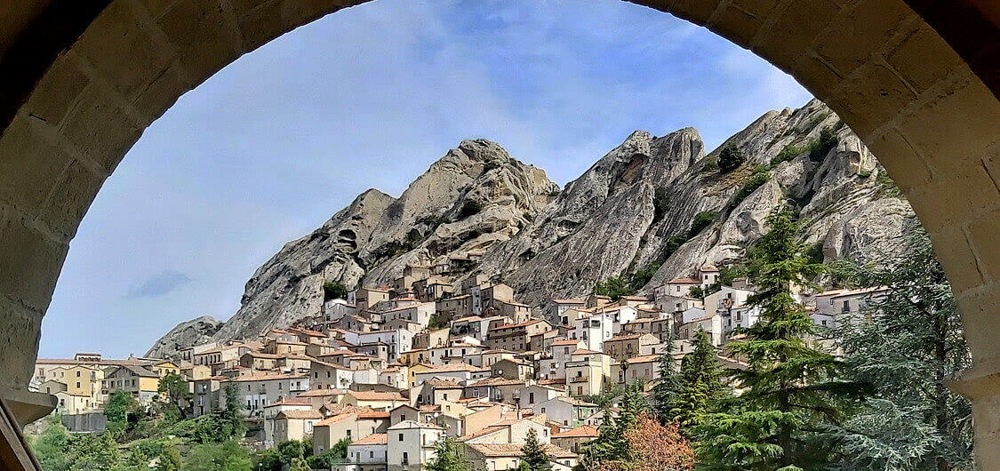
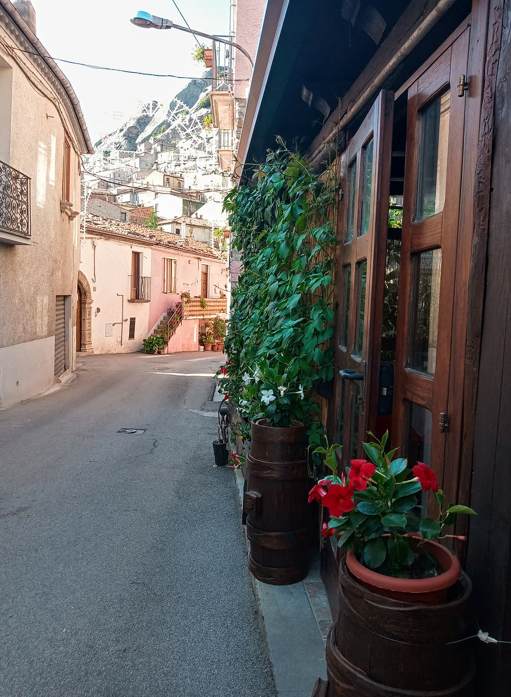
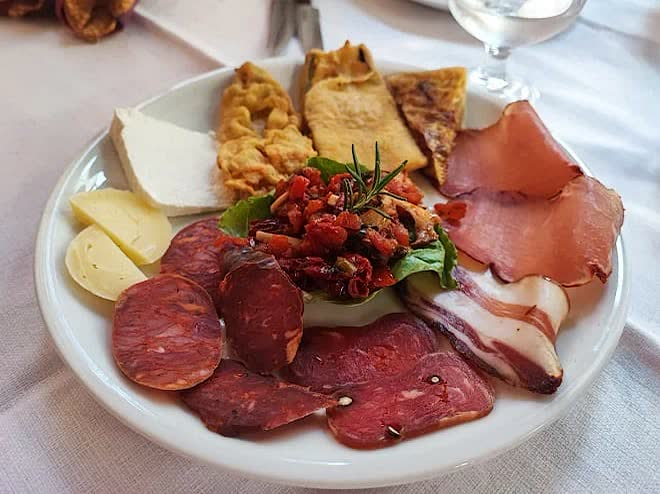
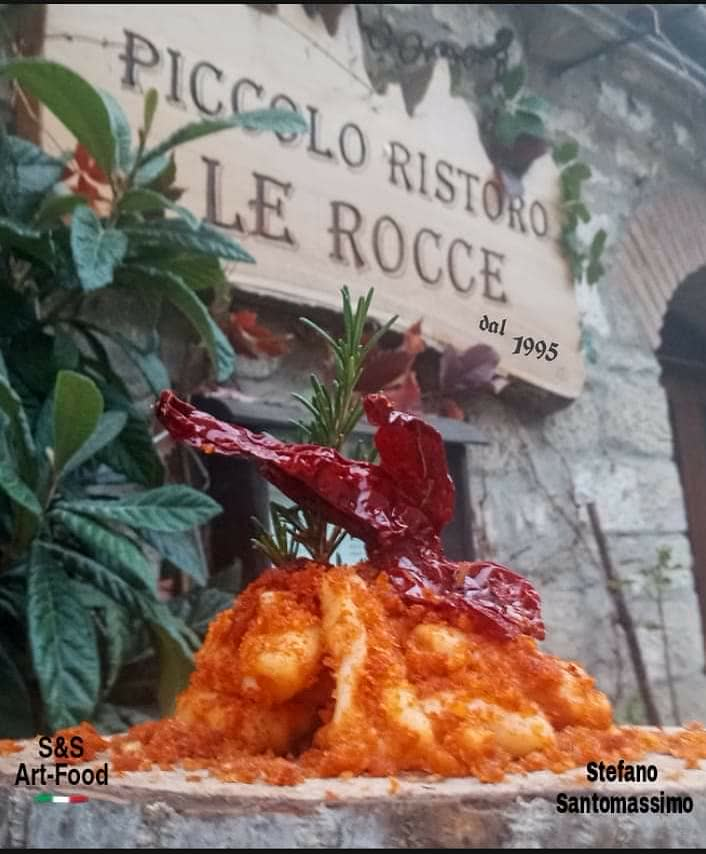
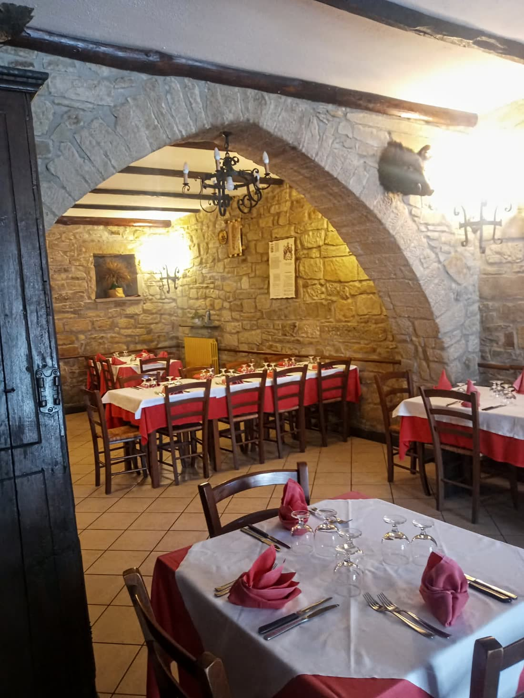
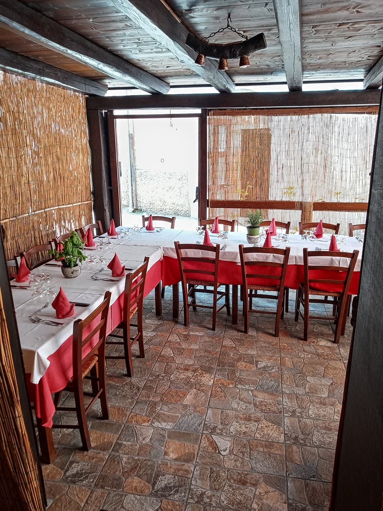
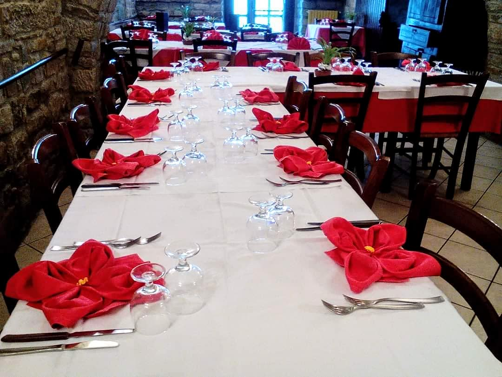
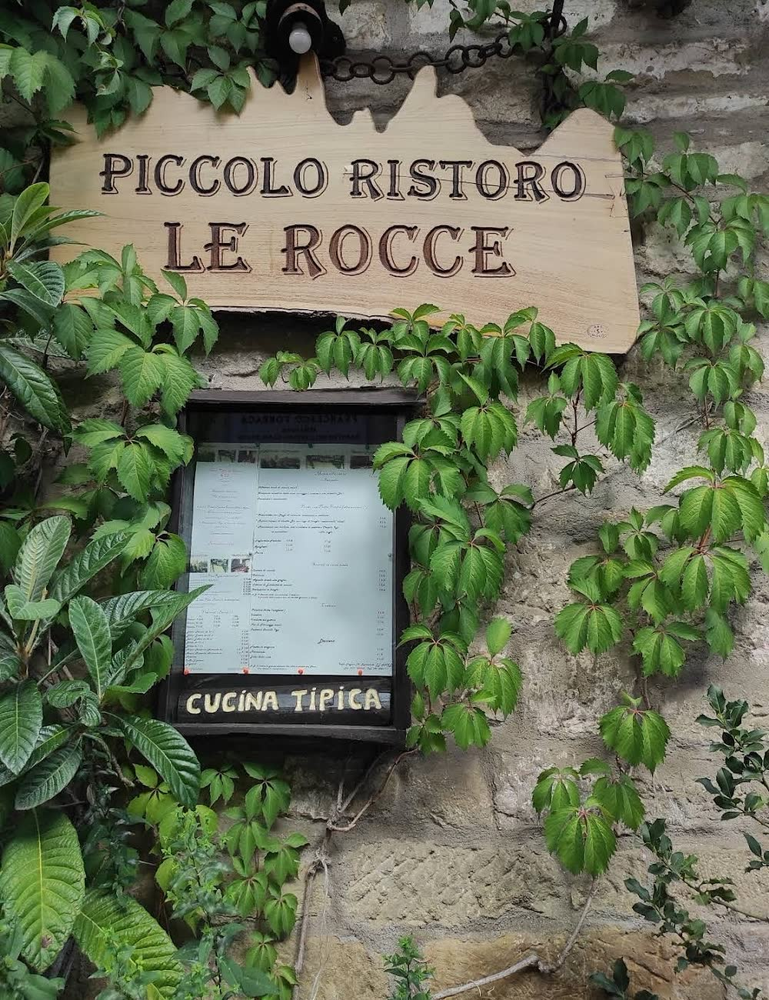
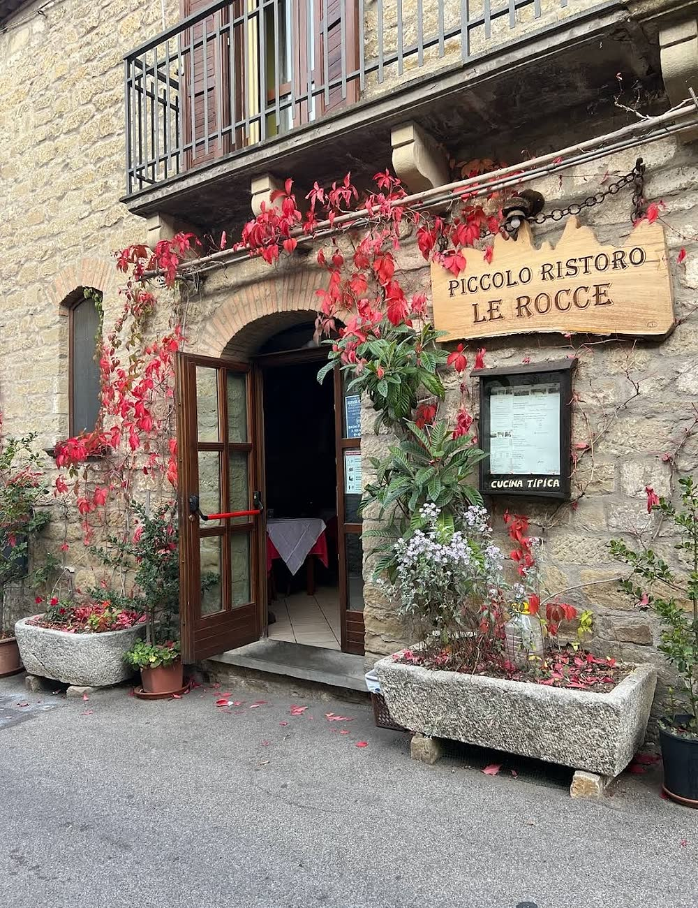

Maccheroni mollicati, noci e peperone Crusco IGP
Il piatto che chiamano il loro cavallo di battaglia. Pasta fresca lavorata a mano.

Pietrapertosa · Dolomiti Lucane
Cucina tipica lucana ai piedi del Castello Normanno-Svevo, dal 1995.
Dove ci troviamo
«Il piccolo Ristoro “LE ROCCE” é situato ai piedi del Castello Normanno Svevo, nella parte bassa del paese a 50 mt. dal “Percorso delle sette pietre” nel centro storico, nei pressi dell’Antico Convento di San Francesco in Via Giuseppe Garibaldi 107/109, adiacente al Monumento/Casa del famoso Dantista e Letterato F. Torraca di fama mondiale.» Le loro parole
Il Ristoro sta in Via Giuseppe Garibaldi 107/109, nella parte bassa del paese. Il loro testo chiama Pietrapertosa «il nostro splendido Borgo rupestre».

Il posto
Del posto scrivono del «richiamo della morfologia paesaggistica tramite scorciatoie di mulattiere e vicoletti in pietra, trekking nei boschi del parco di “Gallipoli Cognato e delle piccole Dolomiti Lucane” e ai sentieri fluviali». E raccontano che a farli uscire «dall’anonimato» è stato «l’ormai rinomato Volo dell’Angelo».
Fotografie dell’attività. Alcune portano la firma di chi le ha scattate: è rimasta com’era.
Cosa si mangia
«La logistica del Ristoro è incentrata su una carta Menù ristretta, studiata di proposito con poche pietanze, per ottimizzare i flussi di risorse e l’approvvigionamento delle vivande, al fine di garantire, tutelare la qualità e ridurre i Food cost.» Le loro parole

Il piatto che chiamano il loro cavallo di battaglia. Pasta fresca lavorata a mano.
Come lo descrivono loro: «Assaggini caserecci con prodotti Bio».
«Le specialità della casa più note si trovano tra i primi piatti con Pasta Fresca fatta a mano.»

«Questo piatto tipico della Cucina Pietrapertosana, veniva preparato la “Domenica delle Palme” dalle nostre nonne. Una bontà unica, che affonda le radici nella tradizione povera e nei sapori genuini più antichi…» Le loro parole
Del condimento scrivono che serve «pane raffermo cotto a forno a legna», realizzato «con lievito madre naturale, cereali assortiti e frumenti antichi selezionati», e «l’immancabile oro rosso, lo zafferano della Basilicata, il famoso Peperone Crusco Igp».
Le sale e il terrazzino
«Il locale ti accoglie con il calore Rustico della pietra a vista in una struttura millenaria, apposite luci soffuse da ricreare un’atmosfera rilassante e romantica. Sono presenti due salette ed un Dehor.» Le loro parole
Dell’architettura scrivono che «raggiunge il suo culmine artistico in un “Arco gotico originale” del XIV secolo a sesto acuto».



Riconoscimenti
Sul loro sito, in apertura, espongono tre certificati di eccellenza di Restaurant Guru come migliore ristorante italiano a Pietrapertosa.
Fonte: i tre certificati pubblicati dall’attività sul proprio sito.

La nostra storia
«Il Piccolo Ristoro “LE ROCCE” nacque nell’Aprile 1995 a Pietrapertosa, quando qui qualsiasi iniziativa ristorativa, era molto prematura…» Le loro parole
Del piatto che li ha fatti conoscere scrivono di essere stati «i primi a portare alla luce questa Ricetta», e che negli anni «é divenuta il Simbolo e il Cavallo di Battaglia del Piccolo Ristoro Le Rocce».
«La Moda passa, le Tradizioni restano indelebili nel tempo...» Le loro parole
Contattaci e vieni a trovarci
